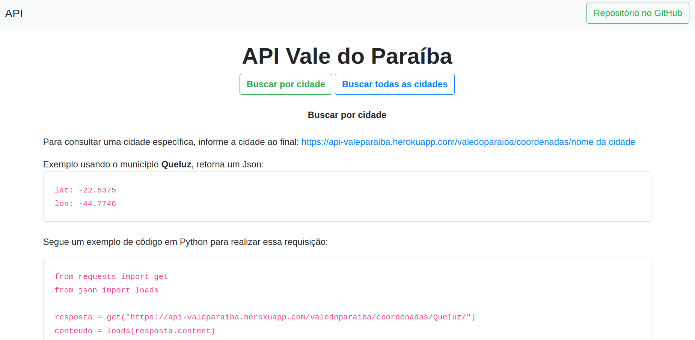
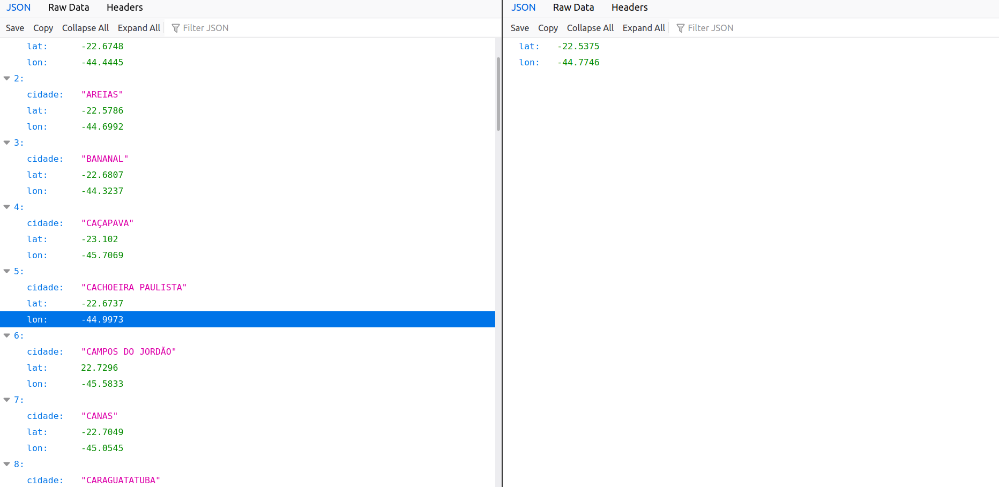

API Cidades
A API possui uma função simples de responder às requisições GET para entregar dados de latitude e longitude de cidades do Vale do Paraíba.
É possível requisitar cidades individuais ou todas, de qualquer forma o tráfego é muito pequeno por conta do conjunto de cidades existentes serem igual a 39. Por esse motivo, se tornou a API usada pelo Rotas Cidades que realiza várias requisições a cada execução.
Tecnologias usadas: Python, Flask, Postman, RESTful e Heroku.
código

